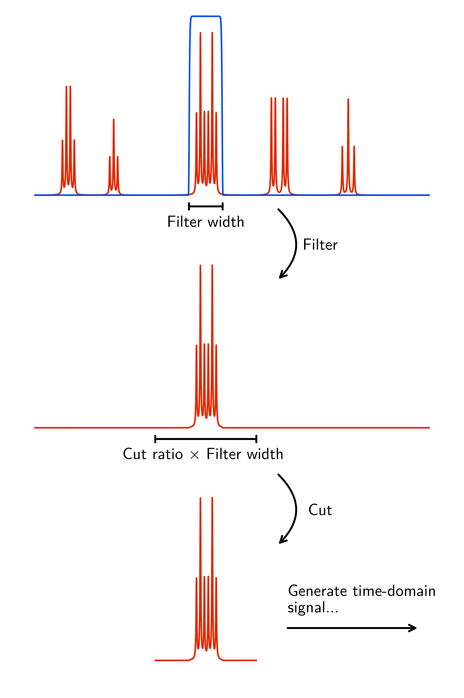
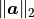

Estimation Set-up¶
The following is a screenshot of the NMR-EsPy GUI calculation set-up window. Key features of the window are annotated:

Plot Navigation¶
The Plot navigation toolbar enables you to change the view of the data. It is an edited version of matplotlib’s toolbar, with the following available buttons:
Icon |
Role |
|---|---|

|
Return to the original plot view. |

|
Return to the previous plot view. |

|
Undo a return to a previous view |

|
Pan. Note that panning outside the spectral window is not possible. |

|
Zoom. |
Phase Correction¶
The GUI has the following appearance when the Phase Correction tab is selected:

Phase correction can be carried out by editing the pivot (red line in the above figure), zero-order phase and first-order phase. This is unlikely to be necessary if you are considering processed data, however you will probably need to do this if you are considering the raw time-domain data.
The values may be changed either by adjusting the scale widgets, or by manually inputting desired values into the adjacent entry boxes.
Note
Validating entry box inputs
For the majority of entry boxes in the GUI, you will notice that the box
turns red after you manually change its contents. This indicates
that the input adhere to certain criteria (i.e. it must be a number, a
valid path on your computer etc.), and it has not been validated. After you
have changed the value in an entry box, press <Return>. The entry box
will then turn back to its original colour. If the value you
provided is valid for the given parameter, the value will be kept. If the
value provided is invalid, the entry box will revert back to the previous
valid value.
The video below illustrates this. Initially, I try to change the value
of the pivot to 7ppm. As soon as the entry box is changed, it goes red,
indicating that it needs validating. When <Return> is pressed, as 7 is
a valid value for the pivot (it is a number, and is within the spectrum’s
sweep width), the pivot is changed accordingly. Note that it is changed to
the closest valid value to the nearest 4dp, which happens to be 6.9999ppm
in this case.
After this, I try to change the pivot to the value invalid which of
course makes no sense in the context of a pivot. As it is invalid, when
<Return> is pressed, the pivot entry box reverts back to the last valid
value it had.
Region Selection¶
For typical NMR signals, the estimation routine used in NMR-EsPy is too expensive to analyse the entire signal. For this reason, it is typically necessary to generate a signal which has been frequency-filtered, drastically reducing the computation time, and increasing the accuracy of the estimation for the region chosen. As a rule of thumb, try to choose a region with fewer than 30 peaks. Any more than this, and the routine may take too long for you to bear.
To filter the signal, two regions of the spectrum need to be indicated:
The region to estimate, highlighted in green.
A region which appears to contain no signals (i.e. is just experimental noise), highlighted in blue.
These regions can be adjusted by editing the scale widgets and entry boxes in the Region Selection tab.
Advanced Estimation Settings¶
Clicking the Advanced Settings button will load a window enabling various aspects of the estimation routine to be tweaked:

Below is a summary of the meaning of all of these parameters.
Note
For the majority of cases, you should find that the default parameters provided will be suitable.
Signal Filter Options¶
The basic idea behind frequency-filtering the data is to apply a band-pass filter to the spectral data, and then to convert the spectrum back to the time domain. By applying this filter, a substantial amount of the spectrum becomes redundant, and so it can be appropriate the “cut” off regions that are not of interest. The basic idea is illustrated in this figure:

Cut signal - Specifies whether or not to perform cutting of the spectrum. By default, this is selected.
Cut width/filter width ratio - Specifies how many points the cut signal will be composed of relative to the number of points the filter spans. This is set to 3 by default.
Matrix Pencil Method Options¶
The Matrix Pencil Method (MPM) is a singular-value decomposition-based approach for estimating signal parameters. It is used in NMR-EsPy to generate an initial guess for numerical optimisation. It is possible to either manually choose how many oscillators to generate using the MPM, or to estimate the number of oscillators using the Minimum Description Length (MDL).
Datapoints to consider - Specifies how many points in the filtered signal to consider. The fewer datapoints, the faster the MPM will be. However, if too few datapoints are used, the result may be unreliable. If the signal contains fewer than 4096 (2¹²) points, the full signal will be considered by default. Otherwise, the first 4096 points will be considered.
Use MDL - Whether or not to use the Minimum Description Length. By default, the MDL will be used.
Number of Oscillators - The number of oscillators used in the MPM. This can only be specified if Use MDL is unticked.
Nonlinear Programming Options¶
The result of the Matrix Pencil Method is fed into a nonlinear programming (NLP) routine to determine the final signal parameter estimate.
Datapoints to consider - Analogous to the parameter with the same name under Matrix Pencil. The cost of running NLP is less susceptible to increases in the number of datapoints, so the full signal will be analysed by default if it comprises 8192 (2¹³) points or fewer. Otherwise, the signal’s first 8192 points will be considered by default.
NLP algorithm - The optimisation routine. This can be either Trust Region or L-BFGS. By default, Trust-Region is used. The primary difference between these methods is that for Trust-Region, the Hessian matrix (a matrix of second order derivatives) is computed explicitly. In L-BFGS, the Hessian is approximated. The upshot of this is that the Trust-Region routine tends to lead to convergence in fewer iterations, however each iteration takes longer to compute.
Maximum iterations - The largest number of iterations to perform before terminating an returning the optimiser. The default value is dependent on the NLP algorithm used (200 if Trust-Region selected, 500 if L-BFGS selected).
Optimise phase variance - Specifies whether to consider the variance of oscillator phases during the estimation routine. If your data is derived from a well-phased spectrum, it is advised you have this selected.
Amplitude threshold - Sets a threshold, such that any oscillator in the final result with an amplitude below the threshold will be removed. The threshold is defined as
where  is the Euclidian norm of the oscillator amplitudes, and is the specified threshold. By default, no such threshold will be applied to the data.
Once you are happy with the calculation setup, simply click the Run button. You will find that details of the routine are output to the terminal as it runs.